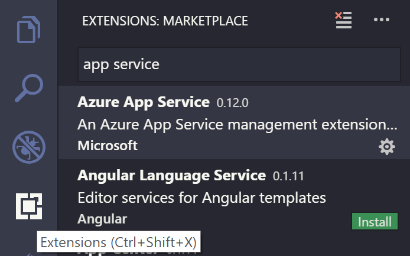
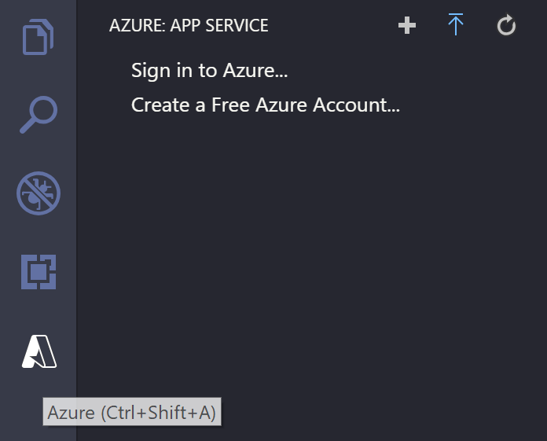
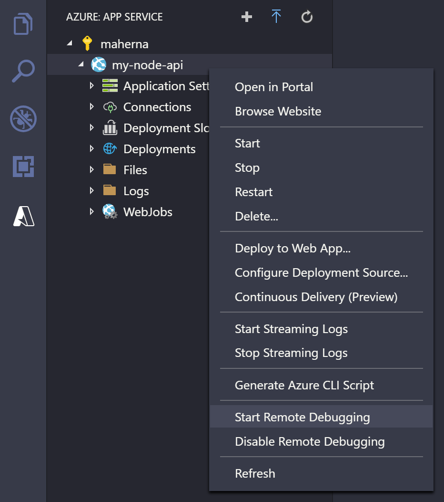
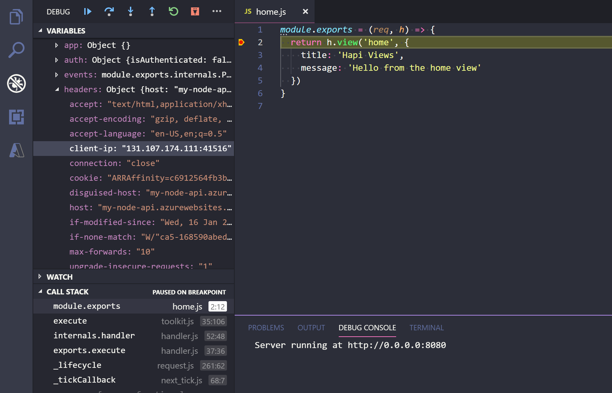

Azure Remote Debugging for Node.js
Connect the Visual Studio Code debugger to your Node.js applications running on Azure App Service on Linux. The debugger works the same as when it's connected to a local Node.js process - including the use of Breakpoints and Logpoints.
Install the extension
Remote debugging support for VS Code is provided by the Azure App Service extension for apps deployed to Azure. To install the Azure App Service extension, open the Extensions view by pressing kb(workbench.view.extensions) and search for 'app service' to filter the results. Select the Microsoft Azure App Service extension.

Connect to Azure
Once you've installed the Azure App Service extension, you'll notice there is a new Azure Activity Bar view. Select the Azure view and you'll see the Azure App Service Explorer.

Select Sign in to Azure in the App Service Explorer or Azure: Sign In from the Command Palette (kb(workbench.action.showCommands)) to sign in to your Azure Account. If you don't have an account, select Create a Free Azure Account... to create a free account and get $200 in Azure Credits to try out any combination of Azure services.
Tip: If you don't have an app deployed to Azure App Service, start by following this tutorial to get an app deployed.
Start a remote debugging session
Right-click your app in the App Service explorer and select Start Remote Debugging. This process requires that the app be restarted with the debugger enabled - you'll be prompted to confirm the restart.

Once restarted, VS Code will connect to the app's debugging port via an SSH tunnel. It may take a little time to establish the connection. Once connected, VS Code will switch into debugging mode and work the same as it does when debugging an app locally.

When you're ready to end your remote debugging session, disconnect from the debugger as you would normally and confirm that you want to restart the app.
Next steps
- Logpoints - Use Logpoints to log to the console without "breaking" in the debugger.
- Azure Extensions - The VS Code Marketplace has hundreds of extensions for Azure and the cloud.
- Deploying to Azure - Learn step-by-step how to deploy your application to Azure.